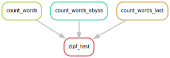

Snakefiles
Create a file, called Snakefile, with the following content:
# Count words.
rule count_words:
input: 'books/isles.txt',
output: 'isles.dat'
shell: 'python wordcount.py books/isles.txt isles.dat'
This is a build file, which for
Snakemake is called a Snakefile - a file executed
by Snakemake. Note that aside from a few keyword additions like rule,
it follows standard Python 3 syntax.
Let us go through each line in turn:
#denotes a comment. Any text from#to the end of the line is ignored by Make.isles.datis a target, a file to be created, or built. In Snakemake, these are called “outputs”, for simplicity’s sake.books/isles.txtis a dependency, a file that is needed to build or update the target. Targets can have zero or more dependencies. Dependencies in Snakemake are called “inputs”.python wordcount.py books/isles.txt isles.datis an action, a command to run to build or update the target using the dependencies. In this case the action is a set of shell commands (we can also use python code… more on that later).- Like python, you can use either tabs or spaces for indentation (don’t use both!).
- Together, the target, dependencies, and actions form a a rule. A rule is a recipe for how to make things.
Our rule above describes how to build the target isles.dat using the
action python wordcount.py and the dependency books/isles.txt.
Information that was implicit in our shell script - that we are
generating a file called isles.dat and that creating this file
requires books/isles.txt - is now made explicit by Snakemake’s syntax.
Let’s first ensure we start from scratch and delete the .dat and .png
files we created earlier:
rm *.dat *.png
By default, Snakemake looks for a file called Snakefile, and we can
run Snakemake as follows:
snakemake
By default, Snakemake tells us what it’s doing as it executes actions:
Provided cores: 1
Rules claiming more threads will be scaled down.
Job counts:
count jobs
1 count_words
1
rule count_words:
input: books/isles.txt
output: isles.dat
jobid: 0
Finished job 0.
1 of 1 steps (100%) done
If we see an error, check your syntax.
Remember, aside from stuff like rule and input,
Snakemake follows Python syntax.
Let’s see if we got what we expected:
head -5 isles.dat
The first 5 lines of isles.dat should look exactly like before.
Snakefiles Do Not Have to be Called Snakefile
We don’t have to call our Snakefile Snakefile. However, if we call it
something else we need to tell Make where to find it. This we can do
using -s flag. For example, if our Makefile is named MyOtherSnakefile:
snakemake -s MyOtherMakefile
When we re-run our Snakefile, Snakemake now informs us that:
Nothing to be done.
This is because our target, isles.dat, has now been created, and
Snakemake will not create it again. To see how this works, let’s pretend to
update one of the text files. Rather than opening the file in an
editor, we can use the shell touch command to update its timestamp
(which would happen if we did edit the file):
touch books/isles.txt
If we compare the timestamps of books/isles.txt and isles.dat,
ls -l books/isles.txt isles.dat
then we see that isles.dat, the target, is now older
thanbooks/isles.txt, its dependency:
-rw-r--r-- 1 mjj Administ 323972 Jun 12 10:35 books/isles.txt
-rw-r--r-- 1 mjj Administ 182273 Jun 12 09:58 isles.dat
If we run Make again,
snakemake
then it recreates isles.dat:
Provided cores: 1
Rules claiming more threads will be scaled down.
Job counts:
count jobs
1 count_words
1
rule count_words:
input: books/isles.txt
output: isles.dat
jobid: 0
Finished job 0.
1 of 1 steps (100%) done
When it is asked to build a target, Snakemake checks the ‘last modification time’ of both the target and its dependencies. If any dependency has been updated since the target, then the actions are re-run to update the target. Using this approach, Snakemake knows to only rebuild the files that, either directly or indirectly, depend on the file that changed. This is called an incremental build.
Snakefiles as Documentation
By explicitly recording the inputs to and outputs from steps in our analysis and the dependencies between files, Snakefiles act as a type of documentation, reducing the number of things we have to remember.
Let’s add another rule to the end of Snakefile.
Note that rules cannot have the same name,
so we’ll call this one count_words_abyss.
rule count_words_abyss:
input: 'books/abyss.txt'
output: 'abyss.dat'
shell: 'python wordcount.py books/abyss.txt abyss.dat'
If we run Snakemake,
snakemake
then we get:
Nothing to be done.
Nothing happens because Snakemake attempts to build the first target it
finds in the Snakefile, the default target,
which is isles.dat which is
already up-to-date. We need to explicitly tell Make we want to build
abyss.dat:
snakemake abyss.dat
Now, we get:
Provided cores: 1
Rules claiming more threads will be scaled down.
Job counts:
count jobs
1 count_words_abyss
1
rule count_words_abyss:
input: books/abyss.txt
output: abyss.dat
jobid: 0
Finished job 0.
1 of 1 steps (100%) doneat
Nothing to be done vs. MissingRuleException
If we ask Snakemake to build a file that already exists and is up to date, then Snakemake informs us that:
Nothing to be done
If we ask Snakemake to build a file that exists but for which there is no rule in our Snakefile, then we get message like:
snakemake wordcount.py
MissingRuleException:
No rule to produce wordcount.py (if you use input functions make sure that they don't raise unexpected exceptions).
When we see this error, double-check that you have a rule to produce that file, and also that the filename has been specified correctly. Even a small difference in a filename will result in a MissingRuleException.
We may want to remove all our data files so we can explicitly recreate
them all. We can introduce a new target, and associated rule, to do
this. We will call it clean, as this is a common name for rules that
delete auto-generated files, like our .dat files:
rule clean:
shell: 'rm -f *.dat'
This is an example of a rule that has no inputs or outputs!. We just want to remove the data files whether or not they exist. If we run Make and specify this target,
snakemake clean
then we get:
Provided cores: 1
Rules claiming more threads will be scaled down.
Job counts:
count jobs
1 clean
1
rule clean:
jobid: 0
Finished job 0.
1 of 1 steps (100%) done
An ls of our current directory reveals that all of our troublesome output files are now gone (as planned)!
We can add a similar command to create all the data files. We can put
this at the top of our Snakefile so that it is the default
target, which is executed by default
if no target is given to the snakemake command:
rule dats:
input:
'isles.dat',
'abyss.dat'
This is an example of a rule that has dependencies that are targets of other rules. When Make runs, it will check to see if the dependencies exist and, if not, will see if rules are available that will create these. If such rules exist it will invoke these first, otherwise Make will raise an error.
Dependencies
The order of rebuilding dependencies is arbitrary. You should not assume that they will be built in the order in which they are listed.
Dependencies must form a directed acyclic graph. A target cannot depend on a dependency which itself, or one of its dependencies, depends on that target.
This rule is also an example of a rule that has no actions. It is used purely to trigger the build of its dependencies, if needed.
If we run,
snakemake dats
then snakemake creates the data files:
Provided cores: 1
Rules claiming more threads will be scaled down.
Job counts:
count jobs
1 count_words
1 count_words_abyss
1 dats
3
rule count_words_abyss:
input: books/abyss.txt
output: abyss.dat
jobid: 1
Finished job 1.
1 of 3 steps (33%) done
rule count_words:
input: books/isles.txt
output: isles.dat
jobid: 2
Finished job 2.
2 of 3 steps (67%) done
localrule dats:
input: isles.dat, abyss.dat
jobid: 0
Finished job 0.
3 of 3 steps (100%) done
If we run dats again, then snakemake will see that the dependencies (isles.dat
and abyss.dat) are already up to date.
Given the target dats has no actions, there is nothing to be done:
snakemake dats
Nothing to be done
Our Snakefile now looks like this:
rule dats:
input:
'isles.dat',
'abyss.dat'
# delete everything so we can re-run things
rule clean:
shell: 'rm -f *.dat'
# count words in one of our "books"
rule count_words:
input: 'books/isles.txt'
output: 'isles.dat'
shell: 'python wordcount.py books/isles.txt isles.dat'
rule count_words_abyss:
input: 'books/abyss.txt'
output: 'abyss.dat'
shell: 'python wordcount.py books/abyss.txt abyss.dat'
The following figure shows a graph of the dependencies embodied within
our Snakefile, involved in building the dats target:

At this point, it becomes important to see what snakemake is doing behind the scenes.
What commands is snakemake actually running?
Snakemake has a special option (-p), that prints every command it is about to run.
Additionally, we can also perform a dry run with -n.
A dry run does nothing, and simply prints out commands instead of actually executing them.
Very useful for debugging!
snakemake clean
snakemake -n -p isles.dat
rule count_words:
input: wordcount.py, books/isles.txt
output: isles.dat
jobid: 0
wildcards: file=isles
python wordcount.py books/isles.txt isles.dat
Job counts:
count jobs
1 count_words
1
Exercise - Write two new rules
- Write a new rule for
last.dat, created frombooks/last.txt. - Update the
datsrule with this target. - Write a new rule for
results.txt, which creates the summary table. The rule needs to:- Depend upon each of the three
.datfiles. - Invoke the action
python zipf_test.py abyss.dat isles.dat last.dat > results.txt.
- Depend upon each of the three
- Put this rule at the top of the Makefile so that it is the default target.
- Update
cleanso that it removesresults.txt.
The following figure shows the dependencies embodied within our
Makefile, involved in building the results.txt target:
